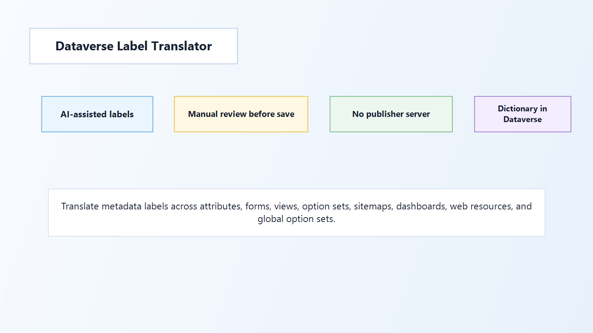

Translate metadata labels
Load attributes, option sets, forms, views, entity metadata, relationships, sitemaps, dashboards, web resources, and global option sets.
Free Dataverse admin utility
Translate Dataverse metadata labels across languages with a focused grid, AI-assisted suggestions, dictionary support, and manual review before save.

Load attributes, option sets, forms, views, entity metadata, relationships, sitemaps, dashboards, web resources, and global option sets.
Auto Translate sends selected labels directly to the AI provider configured by the user. Review proposals before saving changes.
Store approved translations in a Dataverse-backed dictionary and apply them across repeated metadata labels.
The app does not send customer data, labels, metadata, API keys, telemetry, or usage data to a PhuocLe publisher server. AI settings are stored in the customer's Dataverse environment as an app settings web resource. Auto Translate sends selected labels and metadata text directly from the user's browser/client to the configured AI provider. Use AI output at your own risk and review before saving.